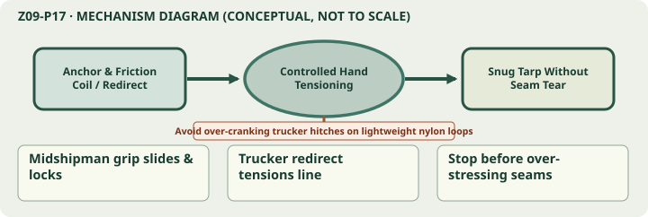

Z09-P17 · Tools and construction · New manuscript
Tie an adjustable taut-line or trucker hitch for tarp guylines
Tension and re-adjust tarp ridgelines and tent guylines smoothly as wet nylon stretches or wind shifts.
When it applies · Pitching tarps, securing rainflies and tying down non-critical camp loads on permitted sites.
Equipment · Utility guyline cordage and firm ground stakes or lawful anchor points.

Actions
- Use a midshipman's hitch (an improved friction grip over the classic taut-line hitch) around a stake when you need one-handed slide adjustment to take up wet-nylon sag.[K09, E20, ED]
- Use a trucker's hitch (an inline slip loop used as a simple redirect) to cinch a ridgeline snugly between two anchors, locking the finish with a quick-release slipped half hitch so it unties easily when wet.[K09, K06, ED]
- Apply moderate controlled tension—over-cranking a trucker's hitch can rip tarp tie-out seams, bend poles or pull stakes right out of damp soil.[K06, E16, E20]
Failure recognition · Pulling a ridgeline bar-tight with excessive mechanical leverage on a lightweight nylon tarp, tearing the corner stitching in the first gust.[K06, E16, E20]
Verify · Confirm the adjustable hitch grips firmly without sliding back under hand pull and releases cleanly without jamming.[K09, ED]
Stop or change course · Re-tie with dry high-friction wraps or add a backup half hitch if slick wet polypropylene or icy cord slips through the adjustable coils.[K09, E16]
Evidence and editorial notes
- E16 · NWS · Wind Safety (current web edition)
- Section: Wind Safety > High Wind Hazards · Conditions: Forecast or developing high winds, squalls, or straight-line winds
Support: High winds topple trees, loft debris, and stress lightweight shelters beyond fabric and anchor limits; relocate out of timbered fall zones and into substantial shelter before gusts peak.
Limitations: Tents and tarps lack standardized wind-speed survival guarantees across soil types and pitch angles. · Conflicting evidence: None; avoids unvalidated mph ratings for improvised pitches.
Editorial note: Drives high-wind shelter inspection, guying limits, and abandonment thresholds. · Specialist reviewer: Weather safety and shelter equipment
Primary source · checked 2026-11-24 - E20 · NPS · Camping: What to Bring (current web edition)
- Section: Camping: What to Bring > Shelter and Sleep System · Conditions: Overnight camping across three-season and cool conditions
Support: Match tent/tarp, groundsheet, sleeping pad, and sleeping bag ratings to expected night lows and precipitation; test pitching and inspect poles, zippers, and stakes before departure.
Limitations: Manufacturer comfort ratings assume dry insulation, ground pad use, and adequate caloric intake. · Conflicting evidence: None; reinforces pre-trip inspection and dry-sleep separation.
Editorial note: Anchors manufactured shelter selection, groundsheet fit, and gear readiness. · Specialist reviewer: Shelter equipment and field education
Primary source · checked 2026-11-24 - K06 · NPS · Forces and Tools (current web edition)
- Section: Forces and Tools > Simple Machines and Mechanical Advantage · Conditions: Levers, wedges, inclined planes and friction mechanisms
Support: Simple machines trade force for distance (levers, wedges, pulleys); friction, alignment and material strength limit real-world output below ideal ratios.
Limitations: Ideal mechanical advantage ignores friction losses and breaking strength of ropes or anchors. · Conflicting evidence: None; clarifies physical trade-offs without implying engineered load ratings.
Editorial note: Anchors mechanical-advantage, wedge-splitting and pulley/rigging limit cards. · Specialist reviewer: Mechanical engineering and rigging safety
Primary source · checked 2026-11-24 - K09 · USDA Forest Service · Handtools for Trail Work (0523-2810-MTDC) (agency handbook)
- Section: Cordage, Anchors and Rigging Boundaries · Conditions: Non-life-safety camp lashing, tarps, haul lines and tie-downs
Support: Cordage strength drops significantly at knots, sharp bends, wet fibers, UV exposure and abrasion; inspect fibers before loading and never use unrated camp cord or improvised bindings for life-safety suspension or climbing.
Limitations: No universal breaking strength applies to natural plant fibers or weathered salvaged rope. · Conflicting evidence: Counters folklore claims equating improvised cordage to rated climbing rope.
Editorial note: Separates camp utility lashing/hauling from life-safety rigging. · Specialist reviewer: Rigging safety and materials mechanics
Primary source · checked 2026-11-24
Source lineage · NPS shelter setup and USFS cordage; new manuscript · Classification · New manuscript.